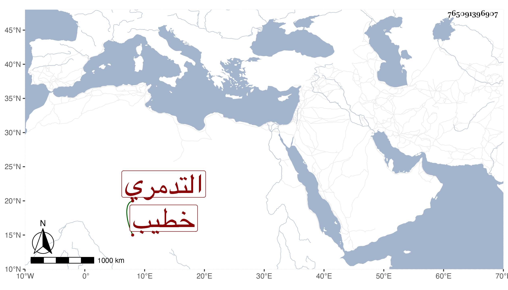

0902Sakhawi.DawLamic.ITO20230111-ara1.EIS1600.765091396907
Biography ID: 765091396907
870
إسحاق بن إبراهيم بن أحمد بن محمد بن كامل التاج التدمري خطيب بلد الخليل . قال شيخنا في أنبائه ذكرانه أخذ عن قاضي حلب الشمس محمد بن أحمد بن المهاجر وعن شيوخنا العراقي وابن الملقن وغيرهما وأجاز له ابن الملقن في الفقه ، ومات ليلة مستهل شوال سنة ثلاث وثلاثين ، قلت وأرخه ابن حسان عن من يثق به من أهل الضبط في يوم الأربعاء ثامن رمضان ورأيت له كتابا سماه مثير الغرام إلى زيارة قبر الخليل عليه السلام وكأنه ابن أخ لشيخنا محمد بن أحمد بن محمد بن كامل الآني .
